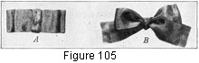
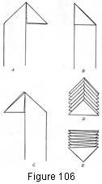

1930—Millinery Processes
by Carlotta M. Brown
RIBBON TRIMMINGS
There never is a season when ribbon is not in use; summer or winter, spring or fall, it is popular, for there is a trimness about a ribbon finish that is difficult to duplicate in any other type of decoration. Ribbon also may be used successfully in combination with all hat coverings, whether of straw, silk, georgette, crepe, velvet, felt, or organdie.
Figure 105. Bows. A, tailored bow; B, simple tied bow.
Tailored Bow
Tailored bows may be made in all sizes; they are used where a straight-lined, tailored effect is desired (Fig. 105).
The bow shown in the figure requires 16 inches of ribbon. The under loops are 3¾ inches long when folded, the upper loops being 2¾ inches in length when folded. The two left-hand folds are placed first; then the right-hand folds are made, and care is taken to have all four folds meet exactly at the center. Along the width of the center run a few stitches to hold the four loops together, and cover with a pleating of ribbon for a center finish. Care must be taken in determining the width of this center finishing strip, in order to keep good proportions between the length and the width of the bow.
Simple Tied Bow
Although the simple tied bow is so familiar that it is commonplace, yet it is one of the most difficult of ribbon ornaments to tie successfully. However, when placing a band on a hat, often the tied bow is to be preferred to the one which is made and adjusted (Fig. 105).
When making the tied bow, cross the ribbon from left to right and, holding the point of crossing firmly between the fingers and the thumb of the left hand, turn the upper strand of ribbon, held in the right hand, under and over this point. Now, with the left hand, loop the left-hand strand, and with the right hand bring the right-hand strand over and under the loop, forming the double loop. Now pull up snugly to make a firm center knot. Trim the ends slanting or, if straight ends are desired, fringe them slightly to prevent an untidy raveling.
Cascade Ribbon Trimming
Fold the ribbon into a triangle, with the length of the ribbon to the left and on top of the triangle.
Fold the triangle once again, making a smaller triangle.
Fold again into a triangle, with the length of the ribbon on the right of the triangle.
Repeat these three processes until the desired length of cascade is obtained. There will be an upright folded ridge running down the center of the cascade. This causes the ornament to stand away from the hat when adjusted.
The cascade may be turned to the reverse side and used as trimming, for the ornament is finished completely on both sides. This gives a flattened trimming.
The ornament is attached to the hat by tacking it at the various points.